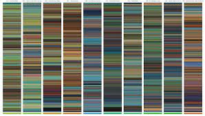

Figure 2.
Figure 2.
I'm not sure if the API I have chosen will work for creating the type of art I would like to curate with my data. Hence I am considering creating my own database or seeing if I can find a collection of images from the film. I would then use those images to create an artwork which would look similar to a collage but also a colour script. Colour scripts are commonly used in animations to convery the tone and pacing of the film. Therefore I felt it would be fitting, to use photographic data from the films to create an overarching view of the film's visual colouring. This may help users on my site who have not seen some of the films to pick which one they would like to see, as they can filter through the art for happier (brighter coloured) films. In they same way, they can filter for films which seem to be set in nature (green/blue) as opposed to industrial (grey) based films.

Figure 1.
Figure 2.